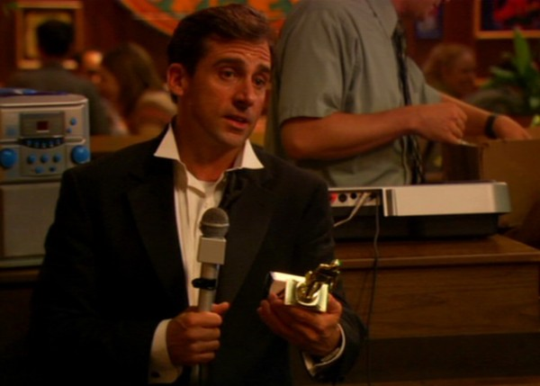

Noche de Dundies en Chili’s: Conoce a los ganadores de la última entrega de Dundies
La sucursal de Dunder Mifflin Scranton volvió a vivir una de sus noches más esperadas y emblemáticas: la entrega anual de los Dundies, la ceremonia de premios organizada por el gerente regional Michael Scott. Este año, la velada tuvo lugar en el restaurante Chili’s, donde empleados y acompañantes se reunieron para compartir risas, buenos momentos y reconocimientos poco convencionales.
Los discursos improvisados de los ganadores, llenos de anécdotas y bromas internas, aportaron un toque espontáneo que hizo que la ceremonia se sintiera cercana y auténtica. A pesar de lo informal del evento, la noche sirvió para reforzar el espíritu de equipo y recordarle a todos la importancia de celebrar las pequeñas victorias y el compañerismo dentro de la oficina.
Entre los reconocidos de la noche se encontraban personajes clave como Pam Beesly, Jim Halpert y Dwight Schrute, cada uno destacado por su rol único en la dinámica diaria de Dunder Mifflin. Más allá de quién recibió cada premio, lo verdaderamente valioso fue la oportunidad que esta reunión brindó para fortalecer los lazos entre compañeros y disfrutar de un momento de relajación y diversión fuera del ambiente habitual de trabajo.
La Noche de Dundies en Chili’s se consolidó una vez más como una tradición que va más allá de los premios: es una celebración de la cultura particular de la oficina de Scranton, donde el talento, el humor y la camaradería se mezclan para crear recuerdos inolvidables. Felicitamos a todos los ganadores y agradecemos a Michael Scott por organizar un evento que, año tras año, une a la familia Dunder Mifflin en torno a la alegría y el reconocimiento mutuo.